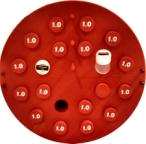
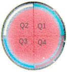

HDA MVCT QA w/Ray6¶
Tomotherapy HDA MVCT QA with RayStation-6
At Tomo¶
Before Starting: powered up, software running, 5-minute warmup, AIRSCANS
- Select Patient: ‘_CT Number Calibration’ [ normal pitch, 2mm slices x 19 ]
- Select all slices -> Accept slices … Prepare scan -> OK -> Setup -> Yes
- Setup cheese phantom (+ PWx20), green lasers
- Main -> Ready -> Yes … Key -> Image -> Key
- Record air-HU and water-HU from screen -> OK
Tools -> Clear selected patient
- Tools -> Dicom Options -> Export Items
- Export to: RaySearch … select correct ‘CTrue Image’ (4 slices)
- Send Now -> Close
Insert density plugs w/test pattern pointed in, orient plug side into gantry
Cheese Phantom
Inserts Plastic Water Cortical Bone Liquid Water Resolution Test Object Air
- Select Patient: ‘ZZ-06_TomoPhant’, plan-3
- ~20 slices covering inner part of plugs, fine pitch, 1mm slices
- Accept Slices … Prepare scan -> OK -> Setup -> Yes
- Setup on green lasers … Main -> Ready -> Yes … Key -> Image -> Key
Tools -> Clear selected patient
- Tools -> Dicom Options -> Export Items
- Export to: RaySearch … Select CTrue Image,
- Send Now -> Close
At RayStation¶
- Patient Data / Patient Information
- Import new patient -> [ ‘Storage SCP’, ‘_CT Number Calibration’, ‘CT Series’]
- ‘Import’ -> if prompted, ‘Create a new patient’ then ‘OK’
- Image Sets / Properties
- confirm correct density table, then ‘OK’
- Patient Modeling / Structure Definition / ROI Tools
- New ROI geometry / Structure templates / Create structures from template…
Template -> ‘MVCT QA’
Initialization -> ‘Align image centers’
Structures -> ‘Select All’
OK, then confirm contour alignment
Double-click ROIs, record ‘Intensity Avg’, click ‘Cancel’
Center: 24.66 … calculate +/- 40 as HU range, e.g. -15 → 60
Cheese Phantom
Q1 1.85 Q2 2.79 Q3 17.66 Q4 13.21
New ROI geometry / Thresholding / Gray level threshold …
Set threshold levels -> ‘-15’ [HU] ‘60’
Output / Create geometry for: / Existing ROI -> ‘+/- 40 HU’ and click ‘OK’
Are you sure that you want to replace the existing geometry: -> ‘Yes’
- New ROI geometry / Algebra and margins / ROI algebra …
- Expression A -> ‘+/- 40 HU’
- Operator -> ‘intersection’
- Expression B -> ‘center_slice’
- Ouput -> no expansion, Create geometry for: / Existing ROI / ‘noise_volume’ -> OK
Are you sure that you want to replace the existing geometry: -> ‘Yes’, long delay
Inspect ‘noise_volume’ for artifacts
Double-click ROIs, record ‘Volume [cm3]’, click ‘Cancel’
noise_volume 33.89 center_slice 45.30 Calculate %-enclosed: 78% vs tolerance of 65%,
Patient Modeling / Structure Definition / POI Tools
Adjust pin_1, pin_2, and pin_3 to center of metal pins in the image slice
Double-click POIs, record coordinates R-L, I-S, P-A, click ‘Cancel’
pin_1 9.37 0.05 11.23 pin_2 14.52 0.05 -2.63 pin_3 9.50 0.05 -11.37
- Patient Data / Patient Information -> ‘Close’
- Modifications must be saved before closing the current patient.
- Do you want to save the changes? -> ‘Yes’
Patient Data / Patient Information
Import new patient -> [‘Storage SCP’, ‘ZZ-06_TomoPhant’, ‘CT Series’]
‘Import’ -> if prompted, ‘Create a new patient’ then ‘OK’
- Image Sets / Properties
- confirm correct density table, then ‘OK’
Patient Modeling / Structure Definition / ROI Tools
Inspect for number of high-contrast objects visible: 4
New ROI geometry / Create New ROI -> ‘bone’, ‘liquid_water’, ‘air’
Use the brush on single slice, structure covers about central half of the plug
Double-click ROIs, record ‘Intensity Avg’, click ‘Cancel’
bone 651.48 liquid_water 6.44 air -911.74
At Excel¶
VI.B.2.a, VI.B.2.b
- Constancy
- Tomo HU +/- 10 from expected, phantom=25, air=-1000
- Uniformity
- Each quadrant periphery within 25 HU of center
- center = phantom slice, radius 1 -> 12 cm (excl outer 3 cm)
- Q1, Q2, Q3, Q4 = slice quadrant, radius 13 -> 14 cm
- SNR of NLT 28 dB
- i.e. NLT 65% (typical 75%) of center volume within 40 HU of mean value
Pin-to-pin distances within 1 mm of true value
Expected pin_2->3 101.2 mm pin_1->2 148.0 mm pin_1->3 226.7 mm
VI.B.2.c, VI.B.2.d, VI.B.2.e
NLT 3 resolution objects visible (1.6 mm)
Density objects within tolerance of expected HU
rpk - 06/28/2018